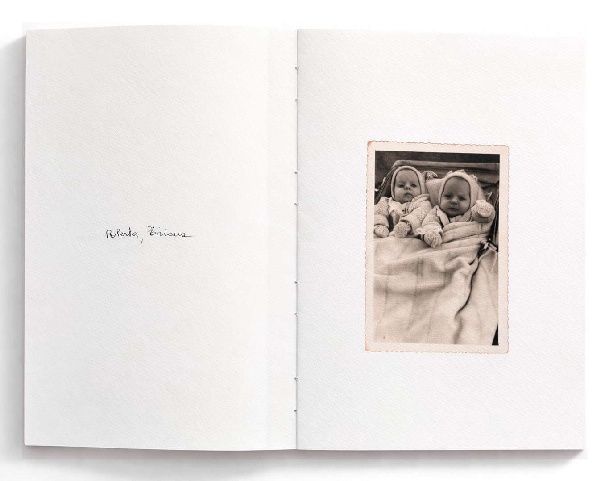
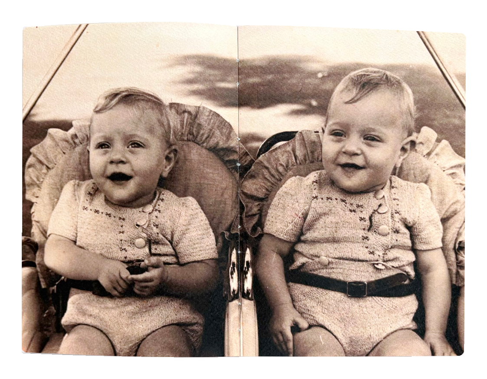
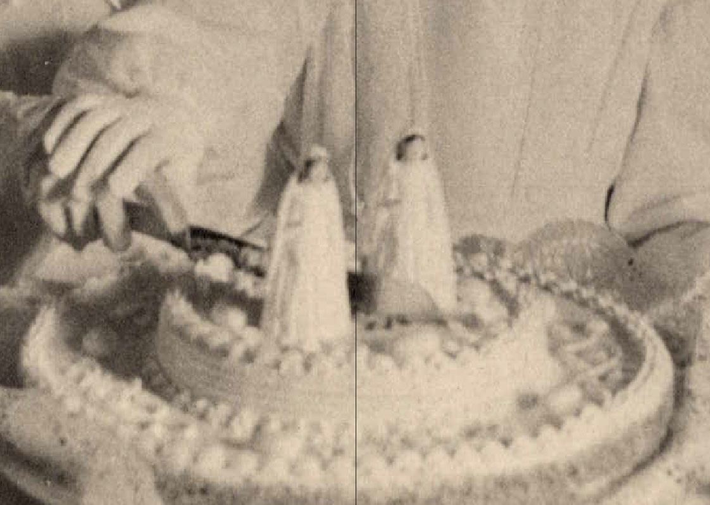
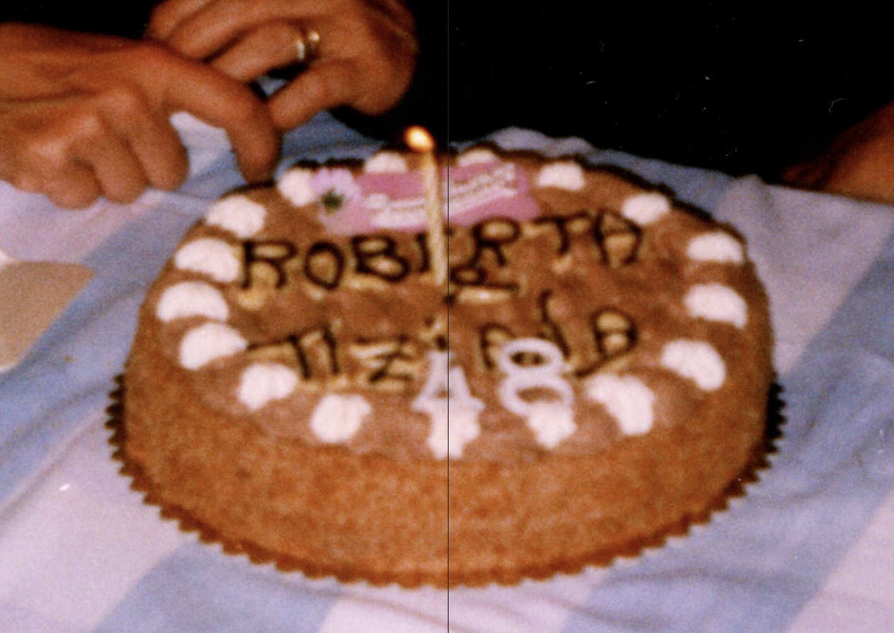
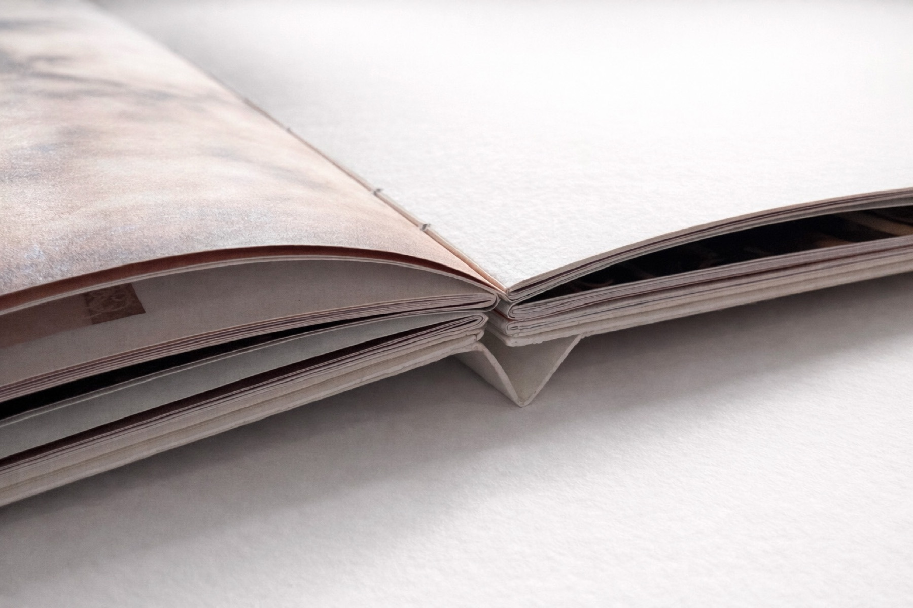

Dualità
Progettazione editorialeDualità è un libro fotografico costruito attorno all’archivio personale di Tiziana e Roberta, due gemelle fotografate nel corso della loro vita.

Il progetto racconta il loro legame attraverso le immagini: connessione silenziosa, complicità, conflitto e la capacità di due identità di crescere insieme senza mai smettere di essere distinte.

Le fotografie d’archivio, alcune rielaborate con effetti specchio, attraversano decenni di vita condivisa.



La cura editoriale, nella scelta delle carte, della rilegatura e del formato, trasforma il libro in un oggetto intimo e prezioso.
